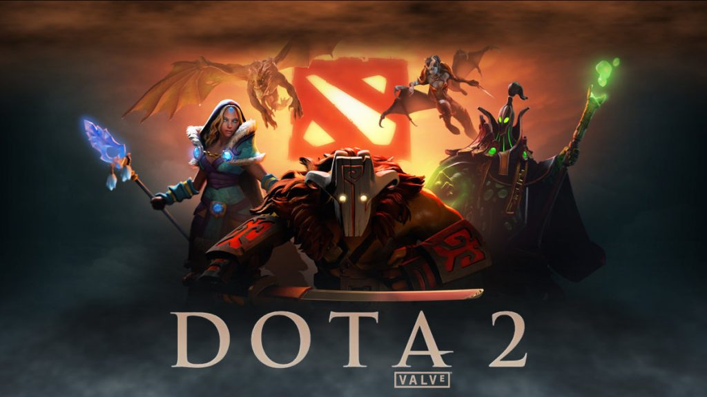

Welcome to my Dota Website, here you can enter in a Match ID number and see which team won and how long the game lasted. Try the Id of my last game 5080120879
Enter a Match Id
Searching for game #{{match_id}}
Did the Radiant win? {{radiant_win}}
The Game Lasted for {{duration}} Seconds
Number of Human players in the game - {{human_players}}
Or you can search by Account Id - try using mine 34629782
Enter User ID
The player has {{win}} wins and {{lose}} losses
The estimated Match Making Rating of this player is {{mmr_estimate}}
The name of this player is: